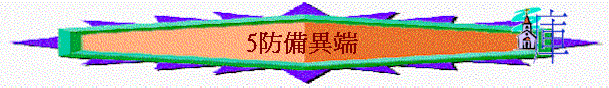

教師版
經文：太 24：3-4 及 10-11、提前 4：1-4、彼前 2：1-3
引言：
福音是 神給與世人的好消息，當一個人相信接受時就可以得著 神所應許的永生，在信主的人看這是極大的恩典，在不信的世人眼中卻是極可笑的愚昧稽談，在魔鬼的眼中卻為極具侵略的事，因人認識福音就有機會脫離牠的轄制，相信接受福音就實在的脫離牠的轄制，故魔鬼用盡辦法來阻擋人相信福音，一是使人硬心拒絕福音或害怕相信福音或輕看福音，二是使人錯信扭曲的福音。異端就是魔鬼使用的第二類方法，使人落入自欺的光境中，既在今生受壓，來生又受永刑。
A)甚麼是異端？
1)問：
雖然我們常常聽到異端這名詞，但究竟異端是甚麼呢？答：
根據韋氏辭典：「異端是一種被視為非正統的或出自虛構的宗教；亦指一種少數派的教團體，其所持的信仰被視為非正統或出自虛構。」據基督教神學的原則，異端是指些自稱是基督教或類似基督教的信仰，但與正統的教會所解釋的聖經真理有所矛盾（將真理忽略或歪曲或以新啟示使正統核心信仰變了質）。他們往往把自己的觀念入聖經中，作為解釋聖經的原則，因而「製造」出一種與聖經不同的教義。
2)問：
怎樣知道異端的信仰是否合乎聖經的真理呢？答：
異端主要是混亂 神的道，將信仰的核心扭曲了，如關乎稱義、復活及三位一體的真理。在初期教會，為應付異端、澄清信仰及宣講福音的緣故，將使徒所傳的真理中重要的部份歸納為一些綱目，形成後來的「信經」的出淚，這些信經在當代是作為個人信仰的表白及給與信徒判別異端的準則。當中以使徒信經、尼西亞信經及亞他拿修信經所說明的為準，這三大信經是經當代的教會領袖仔細研究聖經及按正意分解真道而有的共識。當然信經是沒有取代聖經地位的意圖，而是給予信徒一個簡便清晰的指引。
B)聖經的預言
其實早在使徒時代，聖靈已默示使徒們並在聖經中豫言了末後的情況，警告及責備異端的興起及指出它們共有的特徵，給與後世信徒作為分別及判別的準則，但更重要的是要信徒堅定的持守所信的真理。因為異端的道理經常變更；為的是混亂 神的道，唯有 神的道才是萬古常的真理。在淚今的時代中，對異端的研究已有相當的探究，但仍趕不上日新月異的新興異端，故最好的方法是個人對聖經有深入的認識，並與 神建立一個緊密的關係，當面對異端時不致於無所適從，並可作出判別。
例：政府官員教導調查員判別假銀紙的方法，乃是要他們仔細研究真銀紙，當一張銀紙到他們 手中，就可憑觸摸及觀看而認出真假來。
例：曾有公司招請領航員，面試中問及一人是否知道那�埵麥G石，應考中有人回答說不知道， 但這人告訴面試的負責人，他只知那條路沒有礁石豈不是已足夠呢？同樣，我們今天未必 可以清楚了解異端的信仰，只要認識真理（聖經）便足夠了。
1)混亂真道
異端的目的是混亂主的道，特別關乎三位一體，主耶穌的神性、人性、救贖工作及得救的
法。否認三位一體的信仰，一則可產生泛神主義，異端便可藉此降低 神的地位，而與外邦 宗教混和，二則可推翻主耶穌的神性或人性，使主耶穌的救贖資格產生問題，從而在得救上 加添其他的方法。
a)否認救主
i)不相信主耶穌的神性
若主耶穌只是人，祂的死就與一般人無疑，所作的就不是救恩。但聖經明明的告訴我 們主耶穌的神性。
「誰是說謊話的呢？不是那不認耶穌為基督的麼？不認父與子的，這就是敵基督的。凡 不認子的就沒有父，認子的連父也有了。」 約壹 2：22-23
「凡靈不認耶穌，就不是出於 神，這是那敵基督者的靈。」 約壹 4：3上
「凡越過基督的教訓，不常守著的，就沒有 神，常守著這教訓的，就有父又有子。」 約貳 ：9
ii)不相信基督成了肉身
若基督沒有成了肉身到過世間，救恩就根本沒有成就；主耶穌也被看為一個普通的人， 而不是基督，因有異端看主耶穌只為一個完美的榜樣， 神藉他作工，但聖經告訴我
們，基督耶穌實在降世成人，為了救贖我們脫離罪惡。
「基督耶穌降世，為要拯救罪人，這話是可信的，是十分可佩服的，.....」
提前 1：15
「道成了肉身，住在我們中間，充充滿滿的有恩典有真理。我們也見過祂的榮光，正是
父獨生子的榮光。」 約 1：14
「論到從起初原有的生命之道，就是我們所聽見所看見，親手摸過的。」
約壹 1：1
iii)不相信主耶穌的救贖
有的異端否認主耶穌救贖的完全，要加添好些方法來使救贖完全，這正是否認 神的能
力及以主所作的為缺欠，引致日後有許多人自稱為基督，這應驗了主耶穌預言假基督的興起。
(1)以基督所作的不完全
「．．．．．．連買他們的主他們也不承認．．．．．．」 彼後 2：1
『因為將來有好些人冒我的名來，說：「我是基督！」並要迷惑許h人。』
太 24：5
「因為只有一位 神，在 神和人中間，只有一位中保，乃是降世為人的基督耶穌。
他捨自己作萬人的贖價。」 提前 1：5-6上
「我們憑這旨意，靠耶穌基督只一次獻上衪的身體，就得以成聖。凡祭司天天站著
事奉 神，屢次獻上一樣的祭物，這祭物永不能除罪。但基督獻了一次永遠的贖罪
祭，就在 神的右邊坐下了。從此等候他仇敵成了他的稞凳。因為祂一次獻祭，便叫那得以成聖的人永遠完全。」 來 10：10-14
「但要遠避世俗的虛談，因為這等人必進到更不敬虔的地步，他們的話如同毒瘡，越爛越大，其中有許米乃和腓理徒，他們偏離了真道，說復活的事已過，就敗壞了許 好些人的信心。」 提後 2：16-18
(2)要靠自己的行為得救
「不可讓人因著故意謙虛，和敬拜天使，就奪去你們的獎賞，這等人拘泥在所見過
的，隨著自己的慾心，無故的自高自大，不持定元首，全身既然靠著祂筋節得以相
助聯絡，就因 神大得長進。」 西 2：18-19
「你們若是與基督同死，脫離了世上的小學，為甚麼仍像在世俗中活著，服從那不可拿、不可嘗、不可摸，等類的規條呢？這都是照人所吩咐所教導的。說到這一切，正用的時候就都敗壞了。這些規條，使人徒有智慧之名，用私意崇拜，自表謙卑，
苦待己身，其實在克制肉體的情慾上，是毫無功效」 西 2：20-23
『沒有一個人靠著律法在 神面前稱義，這是明顯的。因為經上說：「義人必因信得 生。」』 加 3：11
「這水所表明的洗禮，淚在藉著耶穌基督復活，也拯救你們，這洗禮本不在乎除掉肉體的污穢，只求在 神面前有無虧的良心。」 彼前 3：21
b)假冒基督
『弟兄們，論到我主耶穌基督降縷，和我們到他那�婸E集，我勸你們，無論有靈、有言 語、有冒我名的書信，說：「主的日子淚在到了。」不要輕易動心，也不要驚慌。人不 拘用甚麼法子，你們總不要被他誘惑，因為那日子以前必有離道反教的事。』
帖後2：1-3上
c)奇異道理
「我往馬其頓去的時候，曾勸你仍住在以弗所，好囑咐那幾個人，不可傳異教（端），也不可聽荒渺無憑的話語，和無窮的家譜，這等事只生辯論
……」 提前 1：3-4「因為時候要到，人必厭煩純正的道理，耳朵發癢，就隨從自己的情慾，增添好些師傅並且掩耳不聽真道，偏向荒渺的言語。」 提後 4：3-4
「聖靈明說在後來的時候，必有人離棄真道，聽從那引誘人的邪靈，和鬼魔的道理。這是 因說謊之人的假冒，這等人的沔心，如同被熱鐵烙慣了一般。他們禁止嫁娶，又禁戒食物（或作又叫人戒葷【葷即肉類】），就是 神所造叫那信而明白真道的人，感謝著領受的。」 提前 4：1-3
d)否認末世
『第一要緊的，該知道末世必有好譏誚的人，隨從自己的私慾出來譏誚說：「主要降縷的 應許在那�堜O？因為從列祖睡了以來，萬物與起初創造的時候仍是一樣。」他們故意忘
記從太古憑 神的命有了天，並從水而出藉水而成的地，故此，當時世界被水淹沒就消滅了。』 彼後 3：3-6
2)敗壞德行
「這些作夢的人，也像他們污穢身體，輕慢主治的，毀謗在尊位的。」 猶 ：8
「他們有禍了，因為走了該隱的道路，又為利往巴蘭的錯謬直奔，並在可拉的背叛中滅亡 了。」 猶 ：11
「他們曾對你們說過，末世必有好譏誚的人，隨從自己不敬虔的私慾而行。就是那些引人結 黨、屬乎血氣、沒有聖靈的人。」 猶 ：18
「將有許多人隨從他們邪淫的行為，便叫真道，因他們的緣故被毀謗。他們因有貪心，要用捏造的言語，在你們身上取利，他們的刑罰，自古以來並不遲延，他們的滅亡也必速速來到。」 彼後 2：2-3
「行的不義，就得了不義的工價，這些人喜愛白晝宴樂，他們已被砧污，又有瑕疵，正與你們一同坐席，就以自己的詭詐為快樂。他們滿眼是淫色，止不住犯罪，引誘那心不堅固人，心中習慣了貪婪，正是被咒詛的種類。」 彼後 2：13-14
C)異端的特徵
近代的異端研究，將異端歸納出一些共通特徵，但未必每一個異端都同樣具備下列的特徵，某些異端會在某些地方上特別強調或明顯出錯。
1)教義上
a)另有權威
除聖經以外，他們另有新啟示作權威，以支持他們錯謬的道理，並或會以「新啟示」高過 聖經的權威。
例：天主教將部份次經列為聖經正典，以支持他們錯謬的理論，如煉獄。並以歷代教
會傳統與聖經的教導的地位相同。
例：耶穌基督末世聖徒教會的摩門經，內容與聖經相違，如多妻。
例：耶和華見證人王國會另譯的「新世界」譯本，為將他們的觀念放入聖經中而將真理歪 曲，但他們卻以此作權威。
b)貶低基督
i)直接否認基督的神性或人性，或否認三位一體的真理。
例：耶和華見證人王國看聖子為首生和最高之被造物，是一種神，否認主耶穌是與聖
父同等的。
例：統一教之文鮮明更宣稱耶穌的彌賽亞工作已失敗，他才是新的彌賽亞，要完成拯
救世人之工作。
ii)間接的將其他條件、或人物、或禮儀高舉，變相貶低基督的唯一性，及祂的救贖的完全。
例：天主教高舉馬利亞及聖徒的地位，又另立其他中保，又以聖禮可加增加功德及涉及得救。
例：耶穌基督末世聖徒教會以洗禮及婚禮均是得救的途徑。
c)奇特教義
異端為要表示自己有新啟示，蒙 神特派，故多有奇特的教義。
例：天主教的贖罪卷、煉獄等。
例：耶穌基督末世聖徒教會的人變神論。
例：統一教的集體結婚，由文鮮明彌賽亞身份安排信眾的婚姻，信眾不得反對。
d)行為稱義
異端多以其他附加的方法作得救的條件，即不是靠救恩白白稱義，而要加上人的行為才可 以稱義。
例：耶和華見證人王國－得救是要靠他們的洗禮、傳教及道德生活。
例：安息日會－嚴守節期、禁戒食物等規條。
2)教會上
a)唯一教會
異端均以他們為 神在末世黑暗中呼召出來的小群，為 神建立唯一真正的教會。
例：天主教以在他們以外無救恩。
例：耶穌末世聖徒教會教自稱「耶穌基督末世聖徒教會」。
例：耶和華見證人王國，以他們才是耶和華真正的見證。
b)強力領袖
異端崛起多因一些頗具異才的領袖，他們能以雄辯的口才、鋒利的文筆、精銳的思想和奇特的啟示來瘋魔群眾（追隨者）。
c)獨裁組織
異端領袖不單本身強而有力，其帶領之教會多是獨裁政體，以一切手段排除異己，嚴格要求會眾向他絕對順服，甚致要追隨者（信徒）發毒認不可離開教會。
例：昔日的人民廟堂，曾集體屠殺會眾九百一十二人。
3)傳教上
a)嚴格受訓
異端均積極訓練每一信徒成為天天傳道，且有高度效率的傳教士，故新加入的會員均施以 嚴格的教義灌輸及傳教方法的訓練實習。
例：耶和華見證人王國每週的事奉訓練班。
例：耶穌基督末世聖徒教會的準備學校、福音進修班及神學研究所等。
b)熱心傳教
異端會用盡各樣的辦法，引人入教，包括推廣教育、關懷社會、施贈慈愛、注重青年工作、提高婦女地位、看重肉體各方面需要等，達致無孔不入的傳教策略。
例：天主教的學校及社會服務。
例：耶穌基督末世聖徒教會及耶和華見證人王國的探訪工作。
c)功德動機
異端所以如此熱心，不理會旁人之異目，不但因深信末日的逼近眉睫而帶來強烈使命感，更重要是他們認為傳教工作乃得救的必須條件，此種功德主義促使初入異端教派者即時全人投上傳教行列。
例：耶穌基督末世聖徒教會以傳揚信息才算是遵行 神的誡命，可以獲得更高層次的賞賜。
例：耶和華見證人王國認為努力傳道才可以換到救恩。
4)教義上
a)與世分別
強調聖潔及禁戒食物，高舉與世俗分別的生活。
例：安息日會守舊約的潔淨條例，嚴禁豬肉及血等。
例：耶穌基督末世聖徒教會服裝整齊，外表斯文，禁戒煙、酒、咖啡等刺激品。
例：天主教強調守各種齋期，配戴十字架及唸珠等。
b)奉獻人生
異端強調凡物共用，教導信徒過獻財獻身的生活。
例：摩門教徒每人奉獻一至兩年時間時間全職傳教。
例：「神的兒女」以出賣肉體賺錢支持他們的屬會經費。
c)隱藏罪惡
許h異端外表聖潔，內藏性慾解放，並以諸種教義為藉口，以美其名。
例：耶穌基督末世聖徒教會的多妻主義，卻以拯救婦女為名。
例：「神的兒女」的賣淫及放縱情慾，卻稱神愛人的靈魂，也愛人的肉體。
D)積極的回應
1)應仔細研讀 神的話，以致心中有 神的道可以作判別。
2)應努力引人歸向主，免得被異端奪去人寶貴的靈魂，更要在生活上有美好的見證，比異端
更準確動機及更好的行為，以致可以吸引更多未信者歸向主。
3)應閱
讀相關的書籍，對異端有更深入的認識，從而可以更準確明白他們的錯謬。4)要為異端信徒禱告，求主使他們從迷路上回轉，並求 神攔阻他們的傳教及發展。
5)為基督教的傳道者及衛道之仕禱告，求 神使用他們幫助信徒判別異端，及栽培信徒在
真道上長進，不致被異教之風搖動。
附錄
A)使徒信經
「我信 神，全能的父，創造天地的主宰。我信耶穌基督， 神的獨生子，我們的主；祂由聖靈成孕，從童貞女馬利亞出生；在本丟彼拉多任內受難，釘死於十字架，死，埋葬，下到陰間；第三天從死人中復活；祂升天，坐在全能的父上帝的右邊；祂將要從那裡降縷，審判活人與死人。我信聖靈、聖而公的教會、聖徒的相通、罪的赦免、身體的復活、永遠的生命。」
B)尼西亞信經
「我們信獨一的 神，全能的父，天地與有形無形之萬物的創造主。我信一位主耶穌基督，神的獨生子，在萬世之先為父所生，光之光， 真神之真 神，被生而非受造，與父本體相同；萬物都藉祂而受造；祂為救我們世人從天而降，藉聖靈從童貞女馬利亞道成肉身而為人；祂在本丟彼拉多任內為我們釘死在十字架上，受難，埋葬，照聖經所記載第三天復活，升天，坐在父的右邊；將來必威榮凜凜的再縷，審判活人與死人；祂的國度將無窮盡。
我們信賜生命的主聖靈，從父而出，與父、子同受敬拜與尊榮；祂曾藉眾先知發言。我們信使徒所立獨一聖而公的教會。我們承認為赦罪所唯一的洗禮。我們瞻望死人復活和來世的生命。阿們。」
C)亞他拿修信經
１． 任何人若要得救，當務之急是篤信大公教會的真道。
２． 這道，若信的不完全，不純正，則必永遠沉淪。
３． 此乃大公教會的真道：敬拜獨一而三位一體，三位一體而合一的 神。
４． 不混亂位格，也不分割本體。
５． 父有一位格，子有一位格，聖靈有一位格。
６． 就神性而言，父、子、聖靈乃一，有同等榮耀，其威嚴同為永存。
７． 父如何，子就如何，聖靈也如何。
８． 父非受造，子非受造，聖靈也非受造。
９． 父不可測，子不可測，聖靈也不可測。
１０． 父是永在，子是永在，聖靈也是永在。
１１． 不是三永在，乃是一永在。
１２． 不是三非受造，不是三不可測，乃是一非受造，一不可測。
１３． 如同父全能，子是全能、聖靈也是全能。
１４． 不是三全能者，乃是一全能者。
１５． 父是 神，子是 神，聖靈是 神。
１６． 不是三 神，乃是一 神。
１７． 如同父是主，子是主，聖靈也是主。
１８． 不是三主，乃是一主。
１９． 照基督教真道，我們不得不承認三位格者各自為 神，各自為主。
２０． 大公之教禁止我們說有三 神或有三主。
２１． 父非受造，也非被造。
２２． 子獨由父，非被造卻為父所生。
２３． 聖靈來自父與子，非被造，也非被生，乃由父與子而出。
２４． 因此只有一父，不是三父；有一子，不是三子；有一聖靈，不是三聖靈。
２５． 這三位一體中，不分先後，不分大小。
２６． 整個三位格同為永存，並為同等。
２７． 故凡事當如上述，敬拜合一而三位一體，三位一體而合一的 神。
２８． 故要得救的人必須如此領悟三位一體。
２９． 再者，若要永遠得救，也必須篤信我們的主耶穌基督的道成肉身。
３０． 因真道是，我們既相信又承認我的主耶穌基督， 神的兒子，是 神也是人。
３１． 是 神，乃因有父的本質，在創世之先由父而生；是人因有母的本質，生於世界。
３２． 完整的 神，又是完整的人，具有理性的靈魂和血肉之體。
３３． 就其神性而言，與父同等，就人性而言，次於父。
３４． 祂雖既是 神而又是人，但非為二，卻為一基督。
３５． 是一，非因神性變為肉體，乃因 神取人性。
３６． 合而為一，非因本質混合，卻因位格的統一。
３７． 就如理性的靈魂與肉體構成一人， 神與人構成一基督。
３８． 祂為救我們而受難，降到陰間，第三日從死人中復活。
３９． 祂升天，坐在全能的父右邊。
４０． 祂必從那�堶偭\，審判活人與死人。
４１． 祂降縷時，萬人必以身體復活。
４２． 為他們本身所作所為作交代。
４３． 行善的必進入永生，作惡的必進入永火。
４４． 這是大公教會的真道，除非篤信此道，就無法得救。
學生版
經文：太 24：3-4 及 10-11，提前 4：1-4，彼前 2：1-3
Ａ）甚麼是異端？
１）問：雖然我們常常聽到「異端」這名詞，但究竟異端是甚麼呢？
答：據基督教神學的原則，異端是指一些自稱是基督教或類似基督教的信仰，但與正統的教會所解釋的聖經真理有所矛盾的（將真理忽略或歪曲或以新啟示，使正統核心信仰變了質）。他們往往把自己的念套入聖經中，作為解釋聖經的原則，因而「製造」出一種與聖經不同的教義。
２）問：怎樣知道異端的信仰是否合乎聖經的真理呢？
答：異端主要是混亂 神的道，將信仰的核心扭曲了，如關乎稱義、復活及三位一體的解釋。在初期教會為了應付異端、澄清信仰及宣講福音的緣故，將使徒所傳的真理中重要的部份歸納為一些綱目，形成後來的「信經」的出淚，這些信經在當代是作為個人信仰的表白，及給予信徒判別異端的準則。當然信經是沒有取代聖經地位的意圖，而是給與信徒一個簡便清晰的指引。
Ｂ）聖經的預言
其實早在使徒時代，聖靈已默示使徒們並豫言了末後的情況，警告及責備異端的興起及指出它們共有的特徵，給與後世信徒作為分別及判別的準則，但更重要的是要信徒堅定的持守所信的真理，因為異端的道理經常變更；為的是混亂 神的道，唯有 神的道才是萬古常新的真理。在淚今的時代中，對異端的研究已有相當的探究，但仍趕不上日新月異的新新興異端，故最好的方法是個人對聖經有深入的認識，並與 神建立一個緊密的關係，當面對異端時，不致於無所適從，並可作出判別。
１）混亂真道
ａ）否認救主
i）不相信主耶穌的神性
若主耶穌只是人，祂的死就與一般人無疑，所作的就不是救恩。但聖經明明的告訴我們主耶穌的神性。
「誰是說謊話的呢？不是那不認耶穌為基督的麼？不認父與子的，這就是敵基督
的。凡不認子的就沒有父，認子的連父也有了。」 約壹 2：22-23
ii）不相信基督成了人身
若基督沒有成了肉身到過世間，救恩就根本沒有成就，主耶穌也被看為一個普通的人，而不是基督，因有異端看主耶穌只為一個完美的榜樣，神 藉他作工，但聖經告訴我們，基督耶穌實在降世成人，為了救贖我們脫離罪惡。
「基督耶穌降世，為要拯救罪人，這話是可信的，是十分可佩服的，......」 提前 1：15
iii）不相信主耶穌的救贖
有的異端否認主耶穌救贖的完全，要加添好些方法來使救贖完全，這正是否認 神的能力及以主所作的為缺欠，引致日後有許h人自稱為基督，這應驗了主耶穌預言假基督的興起。
(1)
以基督所作的不完全「......連買他們的主他們也不承認......」 彼後 2：1
(2)要靠自己的行為得救
「不可讓人因著故意謙虛，和敬拜天使，就奪去你們的獎賞，這等人拘泥所見過的，隨著自己的慾心，無故的自高自大，不持定元首，全身既然靠著祂筋節得以相助聯絡，就因 神大得長進。」 西 2：18-19
ｂ）假冒基督
「因為將來有好些人冒我的名來，說：『我是基督！』並要迷惑許h人。」
太 24：5
ｃ）奇異道理
「聖靈明說在後來的時候，必有人離棄真道，聽從那引誘人的邪靈，和鬼魔的道理。這是因說謊之人的假冒，這等人的沔心，如同被熱鐵烙慣了一般。他們禁止嫁娶，又禁戒食物（或作又叫人戒葷【葷即肉類】），就是 神所造叫那信而明白真道的人，感謝著領受的。」 提前 4：1-3
ｄ）否認末世
『第一要緊的，該知道末世必有好譏誚的人，隨從自己的私慾出來譏誚說：「主要降臨的應許在那�堜O？因為從列祖睡了以來，萬物與起初創造的時候仍是一樣。」他們故意忘記從太古憑 神的命有了天，並從水而出藉水而成的地，故此，當時的世界被水淹沒就消滅了。』 彼後 3：3-6
２）敗壞德行
「行的不義，就得了不義的工價，這些人喜愛白晝宴樂，他們已被玷污，又有瑕疵，正與你們一同坐席，就以自己的詭詐為快樂。他們滿眼是淫色，止不住犯罪，引誘那心不堅固的人，心中習慣了貪婪，正是被咒詛的種類。」 彼後 2：13-14
Ｃ）異端的特徵
１）教義上：
ａ）另有權威──
另有新啟示作權威，以支持他們錯謬的道理，並或會以新啟示高過聖經的權威。ｂ）貶低基督
i）為直接否認基督的神性或人性，或否認三位一體的真理。
ii）間接的將其他條件、或人物、或禮儀高舉，變相貶低基督的唯一性，及祂的救贖的完全。
ｃ）奇特教義──
異端為要表示自己有新啟示，蒙 神特派，故多有奇特的教義。ｄ）行為稱義──
異端多以其他附加的方法作為得救的條件，而不是靠救恩白白稱義。
２）教會上：
ａ）唯一教會──
以他們為 神在末世黑暗中呼召出來的小群，建立唯一真正的教會。ｂ）強力領袖──
異端崛起多因一些頗具異才的領袖，他們能以雄辯的口才、鋒利的文筆、精銳的思想、奇特的啟示來瘋魔群眾。ｃ）獨裁組織──
異端領袖不單本身強而有力，其帶領之教會多是獨裁政體，以一切手段排除異己，嚴格要求會眾向他絕對順服，甚致要信眾發毒認不可離開教會。
３）傳教上：
ａ）嚴格受訓──
異端均積極訓練每一信徒成為天天傳道，且有高度效率的傳教士，故新加入的會員均施以嚴格的教義灌輸及傳教方法的訓練實習。ｂ）熱心傳教──
異端會用盡各樣的辦法，引人入教，達致無孔不入的傳教策略。ｃ）功德動機──
因深信末日的逼近而帶來強烈使命感，更重要是以傳教工作乃得救的必需條件，此種功德主義促使初入異端教派者即時全人投上傳教行列。
４）教義上：
ａ）與世分別──
強調聖潔及禁戒食物，高舉與世俗分別的生活。ｂ）奉獻人生──
異端強調凡物共用，教導信徒過獻財獻身的生活。ｃ）隱藏罪惡──
許h異端外表聖潔，內藏性慾解放，並以諸種教義為藉口，以美其名。
Ｄ）積極的回應
１）應仔細研讀 神的話，以致心中有 神的道可以作判別。
２）應努力引人歸向主，免得被異端奪去人寶貴的靈魂，更要在生活上有美好的見證，比異端有更準確動機及更好的行為，以致可以吸引更多未信者歸向主。
３）應閱讀有關的書籍，對異端有更深入的認識，從而可以更準確明白他們的錯謬。
４）要為異端信徒禱告，求主使他們從迷路上回轉，並求 神攔阻他們的傳教及發展。
５）為基督教的傳道者及衛道之仕禱告，求 神使用他們幫助信徒判別異端，及栽培信徒在真道上長進，不致被異教之風搖動。